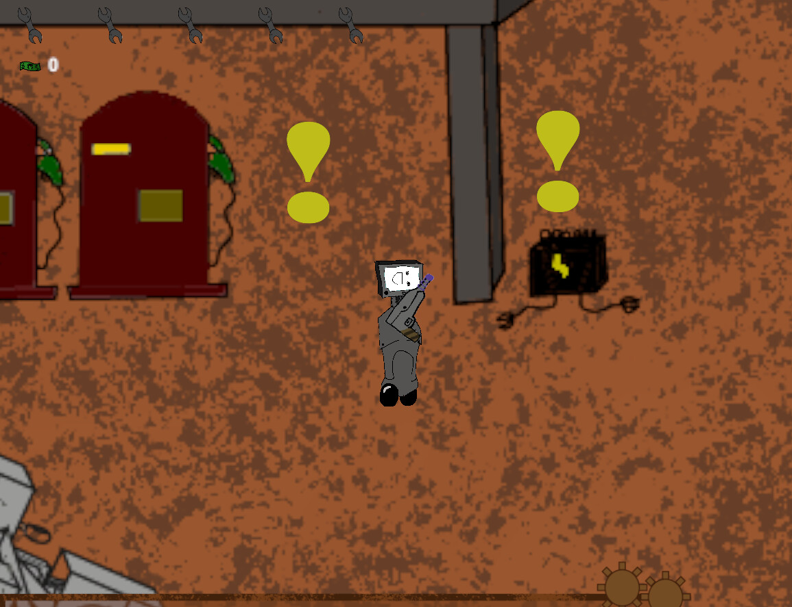
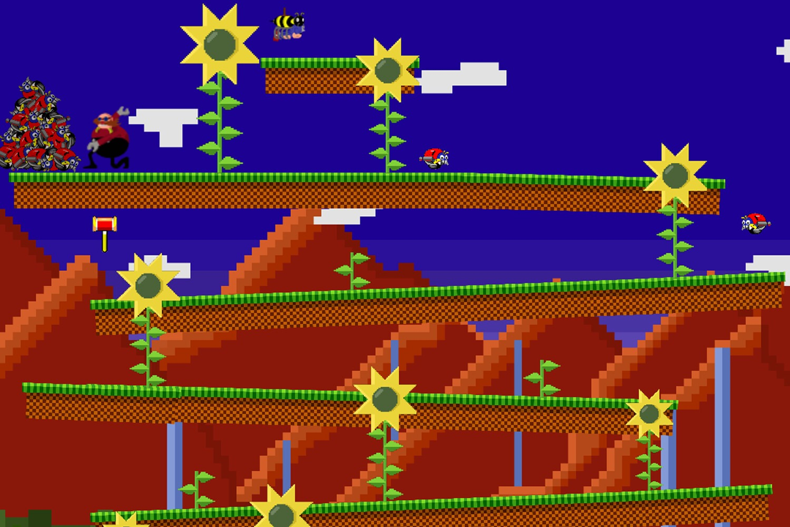

Game Designer — Data-Driven Systems & Gameplay
I design systems players discover on their own terms, then use data to make them better. 5+ years in game design across 2 shipped mobile titles, a graduation thesis, and 10+ student and jam projects across mobile, PC, and web. Statistics background — I iterate with spreadsheets, analytics, and evidence, not gut feel.
Selected Projects
5 curated pieces · 2 case studies + 3 showcase cardsBuilt on lessons from Idle Kingdom Builder. Expanded the core loop with deep progression tiers and a reward-ad/IAP monetization layer. Instrumented Unity Analytics to snapshot player state at 4 milestones, identified economy bugs and a timer persistence defect, and shipped 3 targeted fixes in v1.70. 600+ organic downloads, 4.2/5 rating — zero marketing spend. Median session ~6 min, top 10% averaging 15+ min.
My first published idle game. Designed the core loop and economy system from scratch, taking inspiration from Cookie Clicker's formulas and tuning them toward a slower, more deliberate pace. Shipped to Google Play with 800+ organic downloads. Strong early engagement, but without a proper analytics pipeline I couldn't identify where players dropped off — that gap directly motivated the analytics system I built for Cyberpunk City.
2.5D Metroidvania built as a graduation project at PUC-SP. Started as game designer, but the role shifted to developer/producer as I took over programming core systems, parkour mechanics, and managing the art/sound pipeline. Led scope cuts to ship a playable vertical slice with a team of 6 under academic deadlines. Well received by the examining committee.
Souls-like combat demo built for PUCJam 2023 (theme: "Sacred"). Designed and programmed the core fighting system — hitboxes, animation trees, life/death state, combat balancing. Won Best Art at PUCJam 2023 across all participating teams (seniors through newcomers) at PUC-SP.
Stealth-action game set in an alternate 2031 Brazil, inspired by Metal Gear Solid and Splinter Cell. Designed the level layout, core stealth/shooting mechanics, and the narrative — blending espionage with absurd comedy in a Brazilian geopolitical setting. Built for CtrlAltJam#3 with a team of 4.
Additional Work — FoxTales Studios
Student studio · PUC-SP · 2020–2023 · Game Designer & 3D Artist

Case Study — Idle Cyberpunk City Clicker
220 tracked players · pre-1.70 build · 4 milestone snapshotsFlying blind after the first game
Idle Kingdom Builder shipped with 800+ downloads and solid reviews, but no analytics pipeline — I had no idea where players dropped off or why. Cyberpunk City was growing steadily but had the same blind spot. I needed a system to see inside the player journey without breaking the budget.
Milestone-based analytics on a budget
Needed maximum data with minimum event sends (free Unity Analytics tier). Designed 4 snapshot events at 1K, 1M, 1B, and 1T credits — capturing buildings, upgrades, click/passive ratio, and time elapsed per player.
Economy validates, bugs surface
Click-to-passive transition confirmed as designed. Found a tracking bug inflating clicker counts (variable naming mistake) and a timer persistence defect at higher milestones producing invalid data.
3 fixes shipped in v1.70
Corrected analytics instrumentation, adjusted passive upgrade multiplier from 5× to 3.5×, and added session persistence. Clean data incoming for before/after comparison in the next analysis cycle.
Knowing what the data showed
The 1M → 1B funnel is the steepest drop (73%). That wall coincides with passive upgrade costs scaling faster than player earning power — the multiplier jump from mid-tier to late-tier buildings is too aggressive. Next iteration targets a smoother mid-game curve: reducing the passive upgrade cost multiplier from 5× to 3.5× (for passive) and 10× to 7× (for clicker).
I'd also rethink upgrade discoverability — 52% of players had zero upgrades at 1K, which means the UI isn't surfacing them early enough. A subtle prompt or visual cue when a player can afford their first upgrade could shift that ratio without being intrusive.
Case Study — Guardian's Falls
Team of 6 · 12 months · Scope management · Graduation thesisAmbition outpaced capacity
Month-1 design doc envisioned 4+ zones, 8 parkour mechanics, combo combat, skill trees, and layered narrative. Team of 6, no dedicated programmer, 12-month academic deadline.
Prototype fast, cut decisively
Built early prototypes with the full mechanic set. Tested which mechanics supported the core loop. Ran a structured beta with categorized feedback. Cut features that weren't pulling their weight.
Ship what works, not everything
Delivered a focused demo across 3 zones with streamlined movement (sprint, slide, dash), dash-strike combat, and environmental storytelling. Linear progression that teaches mechanics through level design.
Demo shipped + 3 design principles I still use
Shipped a coherent vertical slice. Committee acknowledged design trade-offs. Every scope and iteration lesson here directly shaped how I built both idle games.
What We Envisioned vs. What Shipped
The original doc was ambitious by design — dream big, then scope down to what the team can ship well. I handled design, C# programming, and production. No dedicated programmer.
| System | Month 1 Vision | What Shipped | Status |
|---|---|---|---|
| Movement | 8 mechanics: vault, slide, wall jump, grab/climb, swing, roll, sprint, free jump. Stamina system gating usage. | Sprint, slide, dash. Stamina cut entirely — removing the resource gate made movement feel fast and expressive. Vault, wall jump, grab/climb prototyped but cut for clarity. | Evolved |
| Combat | 3-hit combo tree, slide attack, bounce attack, power punches, sprint attack | Dash-into-enemy strike. Combos made players stop and chain punches; the dash-strike kept them flowing. Emerged from prototyping, not the original doc. | Simplified |
| Zones | 4+ zones (Moonlit Meadow, Bond Fracture, Jade Jungle, Innerlake) + Hub | 3 zones shipped. Hub removed. Linear progression instead of branching. | Simplified |
| Progression | Skill tree, NPC quests, HUB, backtracking, left/right difficulty choice | Linear progression through 3 zones. No skill tree or hub. Mechanical mastery is the progression. | Cut |
| Narrative | 4 cardinal guardians, trauma metaphor, intro cutscene, NPC dialogue, symbolic enemy design | Environmental storytelling carries the narrative. No cutscene, no NPC dialogue. World-building embedded in level design. | Evolved |
| Enemies | 3 types per zone + mini-boss + final boss, thematically symbolic designs | Generic enemy types. Focus shifted to making combat feel responsive rather than narratively themed. | Simplified |
Mechanic Spotlight — Dash-Strike Combat
Combat is movement
Instead of standing and executing combos, the player dashes into enemies to attack. The original doc specified a 3-hit combo tree and special attacks — early prototypes had these working, but they pulled the feel in the opposite direction of the movement system. The combos made players stop; the dash-strike kept them flowing.
What I Carried Forward
Scope is a design skill
The original doc had 8 movement mechanics. The shipped game has 3 — and they feel better. This mindset defined how I built both idle games: start with the minimum viable loop, not the maximum vision.
Test before you're ready
Even imperfect testing with non-expert players surfaces problems you can't see from the inside. Beta testers caught level navigation issues and control pain points we'd gone blind to.
Mechanics must talk to each other
The combo system fought the movement system. The dash-strike emerged because we prototyped both and noticed the conflict. Design documents are hypotheses; prototypes are experiments.
Design Documents
GDDs, QDDs, LDDs, and design tests — how I think on paperAbout
Game designer with a statistics background and a build-first, iterate-always approach. I bring a structured, evidence-based methodology to whatever design problem I'm facing — whether that's economy tuning, mechanics, levels, or narrative. 5+ years in game design across 2 shipped mobile titles, a graduation thesis, and 10+ student and jam projects. Currently based in São Paulo, Brazil.
That approach comes from studying how Valve teaches Portal's mechanics through play and guides Half-Life players with lighting and architecture instead of waypoints — invisible design validated by obsessive playtesting. Kojima's influence shows up in the ambition: trusting players with complex systems and meaningful choices, not dumbing things down, but making depth accessible through careful iteration.
Outside of shipping games, I teach game development and design to kids and teens — 300+ students across three schools, adapting content for ages 8 through 17. It's the best training I've found for studio communication: if a 10-year-old can follow your explanation of a state machine, your spec will survive a cross-discipline review. It also means I can scope a lesson the same way I scope a milestone — break a complex system into deliverable chunks, test whether people actually understood, and adjust before moving on.
My core is systems and economy design, but I actively work across disciplines. The Genshin Impact quest doc demonstrates narrative and quest structure thinking, Bagre Noturno blends stealth mechanics with alternate-reality storytelling, and Cyberpunk City's atmospheric lore ties world-building to progression systems.
- Engines
- Unity 6 (Expert), UE5 (Blueprints/C++), Godot
- Design
- GDDs, economy modeling, level design, quest design, playtesting
- Data
- Unity Analytics, spreadsheet simulation, Python, R
- Code
- C# (Advanced), C++, Python, SQL
- Art
- Blender, Maya, ZBrush, Adobe Creative Suite
- Languages
- Fluent English, Native Portuguese, Basic Spanish